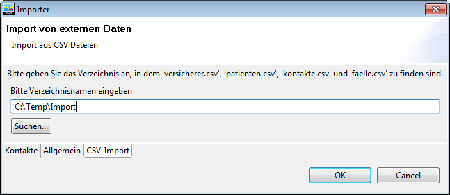

Ch.medshare.importer.csv.feature.feature.group
| Version: | 3.0 |
| Kategorie: | Datenaustausch |
| Beschreibung: | Import aus Stammdaten von aus definierten Daten vom Typ CSV |
| Author: | |
| Letzte Bearbeitung: | 17. Juni 2014 |
| Voraussetzungen: | Elexis 3.0 |
| Betriebssystem: | Windows, Mac, Linux |
| Lizenz: | Proprietär |
Einführung
Dieses Plugin ermöglicht Ihnen den Import von Stammdaten aus definierten Dateien vom Typ ‘CSV’ (character separated values) nach Elexis.
Voraussetzungen
Dieses Plugin benötigt Elexis 2.1 oder höher. Es erwartet die zu importierenden Daten in einem bestimmten Format, welches im Folgenden erklärt wird. Wichtig: Vor dem Import ist UNBEDINGT eine Datensicherung der Elexis Datenbank anzulegen. Wir übernehmen keine Verantwortung für die Datensicherung und deren Wiederherstellbarkeit! Der Kunde ist dafür selbst zuständig. Es können die Dateien folgende Dateien vorhanden sein:
- patienten.csv
- versicherer.csv
- kontakte.csv
- faelle.csv
Alle Dateien müssen als .csv als ‘ISO-8859-1’ vorliegen. Dazu wird die Excel-Datei geöffnet und mit ‘Speichern unter..’ als ‘CSV (Trennzeichen-getrennt)’ gespeichert. Als Trennzeichen wird ein Semicolon (;) erwartet. Es müssen nicht alle diese Dateien vorhanden sein, aber wenn sie vorhanden sind, müssen genau so heissen. Alle Dateien werden im gleichen Verzeichnis erwartet.
Formatbeschreibung
Die Dateien müssen nach folgendem Format (Spaltenreihenfolge) erstellt werden: patienten.csv
PatientNr;Name;Vorname;Beruf;Geburtsdatum;Adresse1;Adresse2;PLZ;Ort;EMail;
Telefon1;Telefon2;Natel;Geschlecht;AHV;Mandant
PatientNr: Patientennummer aus der früheren Software. In Elexis: Kürzel/ID
Beruf: Kann eine Berufsbezeichnung enthalten. In Elexis: Bemerkungen.
Geburtsdatum: Muss in der Form dd.mm.yyyy oder yyyy-mm-dd sein.
Geschlecht: Erster Buchstaben muss entweder m oder w oder f sein.
AHV: Kann AHV-Nr des Patienten enthalten. In Elexis: Externe ID ‘AHV Nr.’
Mandant: Kann Mandantenkürzel enthalten. In Elexis: Bemerkungen.
Alle Felder ausser PatientNr sind optional (müssen aber vorhanden sein, ggf. leer).
- versicherer.csv
- :
Vers-ID;Name1;Name2;Adresse1;Adresse2;PLZ;Ort;EMail;Telefon;Fax;EAN
Vers-ID: ID des Versichers aus der früheren Software.
Nur zwingend, wenn faelle.csv auch vorhanden ist (für Mapping).
EAN: GLN Versicherers (EAN Nummer).
Alle anderen Felder sind optional (müssen aber vorhanden sein, ggf. leer).
- kontakte.csv
- :
Kontakt-ID;Name1;Name2;Titel;Zusatz;Adresse1;Adresse2;PLZ;Ort;Tel;Fax;
Mobiltelefon;E-Mail;Webseite
Kontakt-ID: ID des Kontakts aus der früheren Software. Optional.
Titel: Anrede oder Titel. Wenn dieses Feld ausgefüllt ist, wird in Elexis ein Kontakt vom Typ ‘Person’ erstellt. Ist das Feld leer, wird ein Kontakt vom Typ ‘Organisation’ erstellt.
Alle anderen Felder sind optional (müssen aber vorhanden sein, ggf. leer).
- faelle.csv
- :
PatientNr;Versicherung EAN;Versichertennummer;Vers-ID
PatientNr: Verweis auf ‘PatientNr’ in patienten.csv
Versicherung EAN: Verweis auf ‘EAN’ in versicherer.csv
Vers-ID: Verweis auf ‘Vers-ID’ in versicherer.csv
Versichertennummer Nummer, die den Patienten bei der Versicherung identifiziert (Policennummer). Optional (muss aber vorhanden sein, ggf. leer).
Diese Datei definiert die Beziehung zwischen Patienten und Versicherungen. Entweder EAN oder Vers-ID muss angegeben sein.
Importvorgang
Achtung: Falls Sie direkt in ein neu installiertes Elexis importieren möchten: Es muss zumindest ein Mandant schon vor dem Import definiert sein! Wenn das Plugin korrekt installiert ist, erscheint die Option ‘CSV-Importer’ in der Datenimport-Dialogbox (Menu Datei-Datenimport). [ht]  [cvsimport:fig1] Wählen Sie mit ‘Suche’ das Verzeichnis an, in dem die benötigten csv-Dateien gespeichert sind, und klicken Sie dann auf ok. Je nach Umfang der Daten wird der Import einige Sekunden bis Minuten dauern. Danach sollten Sie Elexis neu starten. Während des Importvorgangs wird ein Logfile erstellt. Wir empfehlen dringend, den Inhalt des Logfiles (%userprofile%\elexis\CSVImport.log) nach dem Import zu überprüfen. Der Import ist grundsätzlich für eine einmalige Durchführung programmiert worden. Bei mehrmaligem Importieren werden Duplikate bestmöglich erkannt. Es kann aber nicht ausgeschlossen werden, dass dadurch unerwünschte Nebenwirkungen auftreten. Wichtig: Nach einem Import immer Logfile konsultieren und in Elexis importierte Daten kontrollieren!